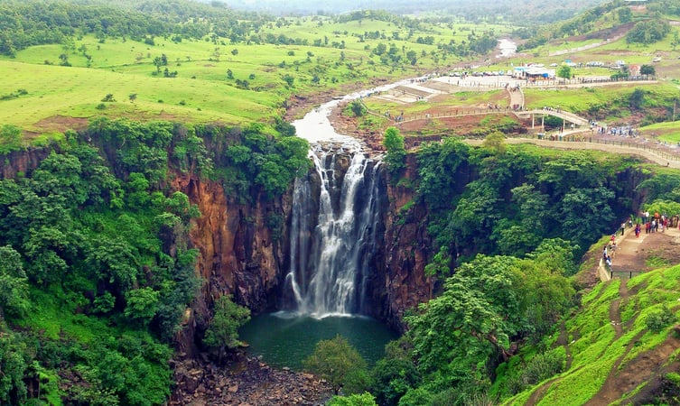
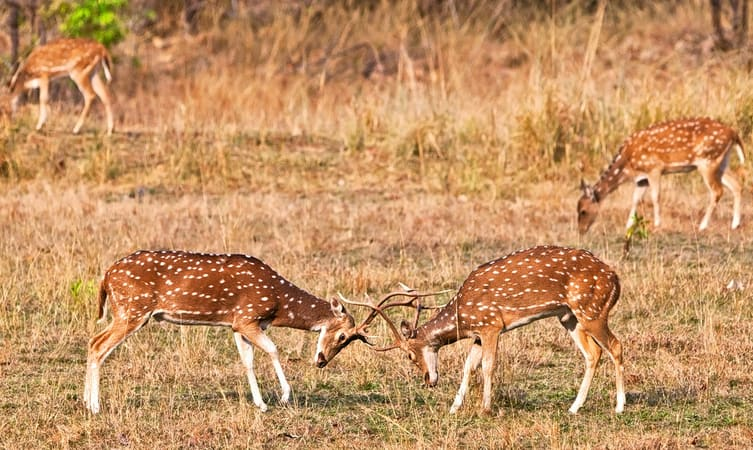

Explore Indore - City of Foodies
Rajwada, Lalbagh Palace, Sarafa Market, Central Museum of Indore, Patalpani Waterfall, Annapurna Temple, Ralamandal Wildlife Sanctuary, Chappan Dukaan, Choral Dam, Tincha Falls, Indore White Church, Mandu or Mandavgad Forts and more tourist sights.

Khajrana Ganesh Mandir

Patalpani Waterfall
